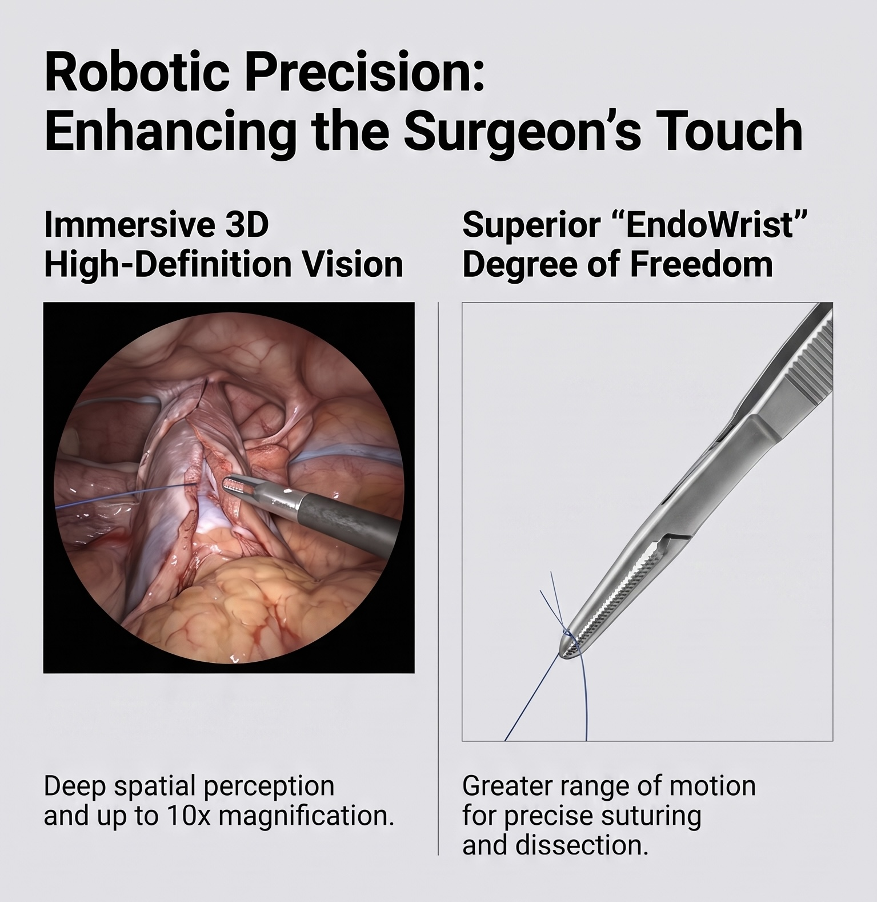
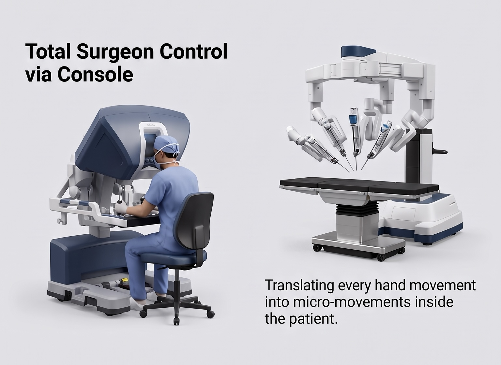

When I tell patients their cancer surgery will involve a robot, they sometimes worry. It is easy to picture a machine doing the operation all by itself.
The robotic system is a highly advanced tool for my hands and eyes. In urology, we often operate in deep, tight spaces like the pelvis to treat prostate or bladder cancer. For these surgeries, robotic tools are a huge help. Here is a look at how this technology directly benefits you.
From stiff tools to robotic wrists
Before robots, the standard method was traditional laparoscopy. In that type of surgery, we use long, stiff tools through small cuts. We watch our movements on a normal flat TV screen across the room.
Using these stiff tools is like trying to tie your shoes with chopsticks. It works, but it takes a lot of effort because the tools cannot bend. Robotic surgery changes all of that.

A clear, 3D view
When I sit at the robotic console, I do not look at a flat screen. I look into a special viewer that gives me a high-definition 3D view of your body. The image is zoomed in up to 10 times.
This close-up view is very important. The prostate and bladder are surrounded by tiny nerves and blood vessels. These control your bladder and sexual function. The 3D view lets me find and remove the cancer safely while protecting these important nerves. We can even use 3D models to map out your exact anatomy before we make the first cut.
Smooth and exact movements
The best part of the robotic system is the tools. While older tools are stiff, robotic tools have mechanical wrists.
They copy the exact movements of my hands and fingers. However, they can bend and rotate in ways a human hand cannot.
The system also removes any natural shaking. Even the best surgeons have a tiny hand tremor. The robotic software filters this out, making every movement perfectly smooth. We also use artificial intelligence to track and improve these surgical movements, making the surgery as exact as possible.

What this means for you
What does all this technology mean for your recovery?
- Protecting nervesWe have a much better chance of saving the nerves that control your bladder and sexual function.
- Less painThe robotic arms move very gently at the surgical cuts. This causes less stress on your body and leads to less pain after surgery.
- Faster recoverySmaller cuts mean you spend less time in the hospital. You can get back to your normal life faster.
- Less blood lossThe clear 3D view helps us find and control small blood vessels quickly.
The robotic console is a wonderful machine, but it is still just a tool. It takes the training and skill of a dedicated surgeon to use it well and give you the best possible result.
Have a question about your diagnosis?
If you have been told you need surgery for a urological cancer, a consultation is the place to ask what the options are, including the ones that are not surgery.
Book Your Consultation